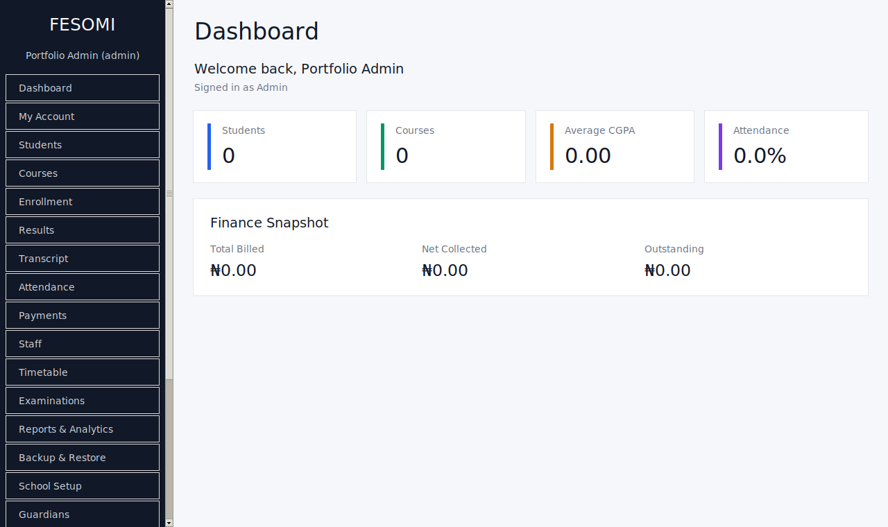

01FESOMI School
Management System
A complete desktop platform that brings student records, attendance, school fees, results, permissions, guardians, reporting, and more into one reliable workflow.
Private production repository · Demo available on request